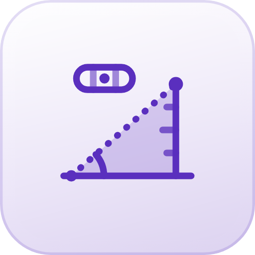

Höhe, Wasserwaage und Neigung – mit Kamera und Lagesensor. 100% lokal.
Baum, Haus, Mast oder Turm: Du peilst mit dem Fadenkreuz der Kamera an, MessWahr rechnet aus Neigung und Entfernung die Höhe aus. Das Kamerabild wird nur live angezeigt, nie gespeichert.
Du peilst zuerst den Fuß des Objekts an (wo es den Boden berührt), dann die Spitze. Der Boden sollte dazwischen ungefähr eben sein.
Leg das iPhone flach auf eine Fläche oder stell es auf eine Kante. Die Ansicht wechselt von selbst.
„Kalibrieren" gleicht kleine Fehler des Sensors aus: Du misst einmal, drehst das iPhone auf derselben Stelle um 180° und misst noch einmal – der Mittelwert ist der echte Nullpunkt. Hüllen mit Kamerabuckel kippen das Gerät; leg es für genaue Werte ohne Hülle oder auf die Kante.
Leg das iPhone auf die geneigte Fläche (Rampe, Dach, Tisch) oder stell es mit der langen Kante auf eine Schräge (Geländer, Treppe).
Noch genauer: Unter „Waage“ einmal kalibrieren – der Nullpunkt gilt auch hier.
Orientierungswerte ohne Gewähr. Für Bauabnahmen und Vermessung gelten die einschlägigen Regeln und geeichte Messgeräte.
MessWahr nutzt den Lagesensor deines iPhones. Er ist auf etwa ein halbes bis ein Grad genau; dazu kommen dein Zielen und die angenommene Kamerahöhe. Die Werte sind eine gute Orientierung, aber keine Vermessung und kein Ersatz für ein geeichtes Messgerät.
Version 1.0 · Stand 10/2026 · Teil der WahrZentrale